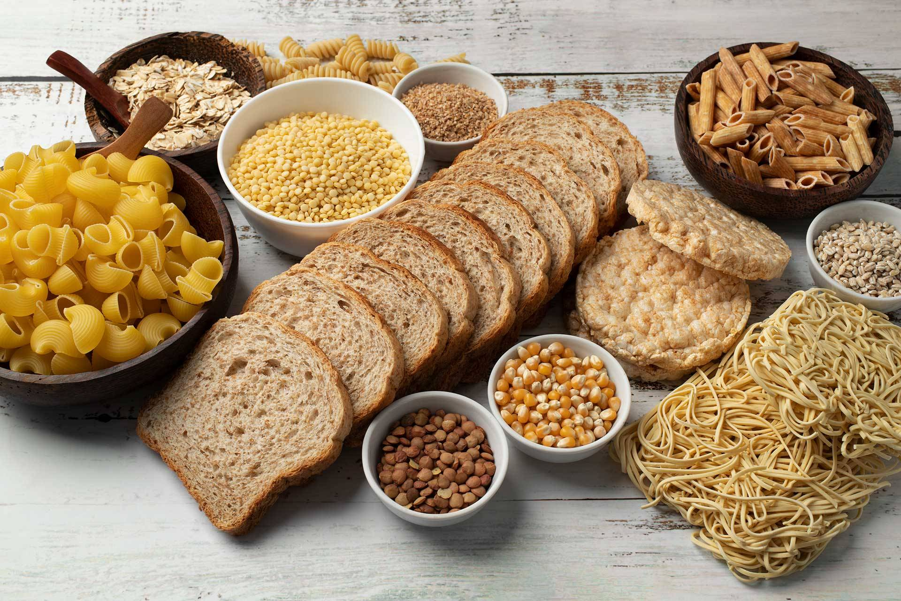
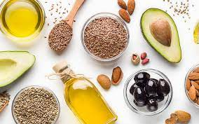

Karbonhidratlar

Karbonhidratlar vücudun enerji ihtiyacını karşılar.
İyi bir antrenmanın
ardından enerji depolarını doldurmak için önemlidir. İyi kaynaklar
arasında tam tahıllar, sebzeler ve meyveler bulunmaktadır.
Proteinler

Proteinler, egzersiz yapan kişiler için proteinin en önemli görevi; kas yapımı ve onarımıdır.
Süt ve süt ürünleri, et, yumurta, balık, tavuk gibi hayvansal ürünlerden ve kurubaklagil kaynaklarından protein ihtiyacı karşılanabilir.
Yağlar

Yağlar vücudumuzda ve beslenmemizde önemli bir rol oynar. Vücut yağı, yalıtımı sağlar, darbelere karşı korur ve enerji rezervidir.
Besinsel yağ ise enerjiyi, temel yağ asitlerini ve yağda eriyen vitaminleri sağlar. Sağlıklı bir vücudun makul ölçüde bir yağ düzeyi olmalıdır.